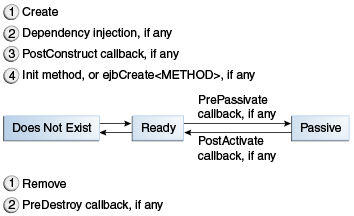

Los Ciclos de Vida de los Enterprise Bean
An enterprise bean goes through various stages during its lifetime, or lifecycle. Each type of enterprise bean (stateful session, stateless session, singleton session, or message-driven) has a different lifecycle.
The descriptions that follow refer to methods that are explained along with the code examples in the next two chapters. If you are new to enterprise beans, you should skip this section and run the code examples first.
Aquí se tratan los siguientes temas:
El Ciclo de Vida de un Bean de Sesión con Estado
Figure 35-2 illustrates the stages that a stateful session bean passes through during its lifetime. The client initiates the lifecycle by obtaining a reference to a stateful session bean. The container performs any dependency injection and then invokes the method annotated with @PostConstruct, if any. The bean is now ready to have its business methods invoked by the client.

While in the ready stage, the EJB container may decide to deactivate, or passivate, the bean by moving it from memory to secondary storage. (Typically, the EJB container uses a least-recently-used algorithm to select a bean for passivation.) The EJB container invokes the method annotated @PrePassivate, if any, immediately before passivating it. If a client invokes a business method on the bean while it is in the passive stage, the EJB container activates the bean, calls the method annotated @PostActivate, if any, and then moves it to the ready stage.
At the end of the lifecycle, the client invokes a method annotated @Remove, and the EJB container calls the method annotated @PreDestroy, if any. The bean's instance is then ready for garbage collection.
Your code controls the invocation of only one lifecycle method: the method annotated @Remove. All other methods in Figure 35-2 are invoked by the EJB container. See Capítulo 55, "Resource Adapters and Contracts" for more information.
El Ciclo de Vida de un Bean de Sesión sin Estado
Because a stateless session bean is never passivated, its lifecycle has only two stages: nonexistent and ready for the invocation of business methods. Figure 35-3 illustrates the stages of a stateless session bean.

The EJB container typically creates and maintains a pool of stateless session beans, beginning the stateless session bean's lifecycle. The container performs any dependency injection and then invokes the method annotated @PostConstruct, if it exists. The bean is now ready to have its business methods invoked by a client.
At the end of the lifecycle, the EJB container calls the method annotated @PreDestroy, if it exists. The bean's instance is then ready for garbage collection.
El Ciclo de Vida de un Bean de Sesión Singleton
Like a stateless session bean, a singleton session bean is never passivated and has only two stages, nonexistent and ready for the invocation of business methods, as shown in Figure 35-3.
The EJB container initiates the singleton session bean lifecycle by creating the singleton instance. This occurs upon application deployment if the singleton is annotated with the @Startup annotation. The container performs any dependency injection and then invokes the method annotated @PostConstruct, if it exists. The singleton session bean is now ready to have its business methods invoked by the client.
At the end of the lifecycle, the EJB container calls the method annotated @PreDestroy, if it exists. The singleton session bean is now ready for garbage collection.
El Ciclo de Vida de un Bean Controlado por Mensajes
Figure 35-4 illustrates the stages in the lifecycle of a message-driven bean.

The EJB container usually creates a pool of message-driven bean instances. For each instance, the EJB container performs these tasks.
-
If the message-driven bean uses dependency injection, the container injects these references before instantiating the instance.
-
The container calls the method annotated
@PostConstruct, if any.
Like a stateless session bean, a message-driven bean is never passivated and has only two states: nonexistent and ready to receive messages.
At the end of the lifecycle, the container calls the method annotated @PreDestroy, if any. The bean's instance is then ready for garbage collection.